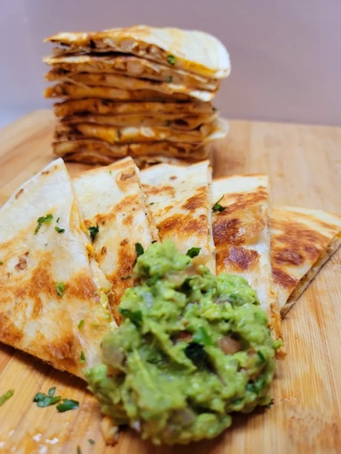

Quesadillas Recipe: The Right Way

Description
The picture shown does not justify this delcious meal. The key to this recipe is your choices of tortillas, cheese and guacamole.
*Ingredients*
- "El Milagro" Tortillas
- "Supremo" Chihuahua Cheese (Or cheese of your choice)
- Freshly made Guacamole. (Either homemade or store bought)
Instructions
- Heat up your "comal" or griddle for about 1 minute on "Med" heat.
- Place 2 or 3 tortillas on the comal/griddle and let that side of tortilla heat up for 20/30 seconds.
- FLIP the the tortilla's and place desired amount of cheese in middle.(2/3 big pinches is my preference) CLOSE the tortilla and let each side cook until desired texture. (15/20 seconds for soft. 30/40 seconds for crunchy)
- Add your Guacamole on top or in it. BONUS: Add refried beans if you're really hungry!